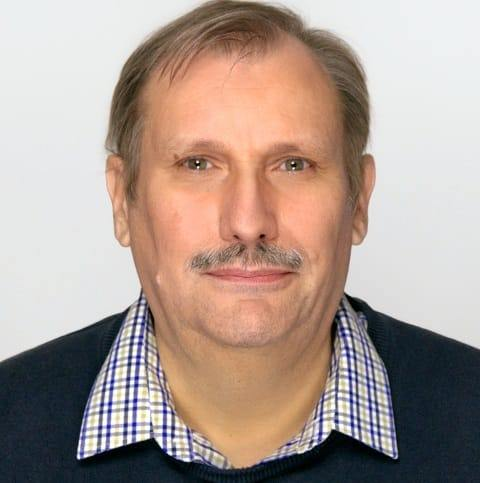

Az IT azon a 13 területén segítek, ahol a legtöbb csapat elakad.
Kecskeméti Lajos vagyok. Oktatással, mentorálással, automatizálással, felhő- és AI-bevezetéssel, adatelemzéssel és térinformatikai megoldásokkal segítem a cégeket és magánszemélyeket — nem egyedül kell megküzdenie a problémával.
Négy terület, tizenhárom konkrét segítség
Az alábbi informatikai tevékenységi körökben tudok érdemben segíteni — oktatástól a mentoráláson át az automatizálásig, adatelemzésig és a digitális megjelenésig.
Oktatás & mentorálás
Tudásátadás, felkészítés és gyakorlati támogatás — nem csak a tananyagig, hanem a valós probléma megoldásáig.
- Oktatás, felkészítés, tesztek és vizsgák online lebonyolítása, az eredmények kiértékelése és megküldése
- Informatikai mentorálás junior és kezdő kollégáknak, valamint szakértői, tanácsadói tevékenység
Automatizáció, felhő & AI
Korszerű technológiák bevezetése és a mindennapi folyamatok tehermentesítése.
- OpenSource informatikai megoldások és programok támogatása, oktatása, bevezetése
- Cloud / felhő megoldások és programok támogatása, oktatása, bevezetése
- AI / mesterséges intelligenciás megoldások és programok támogatása, oktatása, bevezetése
- Folyamat- és tevékenység-automatizálás (Power Automate, VBS, PowerShell, AI-alapú eszközök)
Adat, adatbázis & elemzés
A nyers adatból döntést támogató információ — feltárástól a vizualizációig.
- Adatelemzés, adatriport-készítés, vizualizáció, térképi megjelenítés, geo-pozíció elemzés
- Adatbázis-építés, hangolás, optimalizálás, adatmigrálás, adattisztítás, WEB riport / elemzés készítése
- WEB-es, felhő-alapú és hagyományos adatbányászat (publikus adatbázisokból, internetről, szöveges és egyéb fájlokból)
- Cég, termék, tevékenység, megjelenés, üzleti stratégia és kapcsolati háló elemzése
Digitális megjelenés & térinformatika
A tartalomtól a térképig — amivel egy cég vagy projekt látszódik és megtalálható.
- Digitális tartalomgyártás, céges WEB portál kialakítása, bevezetése, támogatása
- Digitális kép-, videó-, hang- és dokumentumkészítés, dizájnterv készítése, oktatása
- Térinformatikai és digitális térképi megjelenés kialakítása, bevezetése, támogatása
Amit fontosnak tartok — és amiben nem kell egyedül maradnia
Ezek a témák fontosak és hasznosak — érdemes felismerni őket, és nem elmenni mellettük. De ezeket nem kell egyedül megoldani.
Folyamat- és tevékenység-automatizálás
Segítek megvalósítani az üzleti folyamatok és mindennapi tevékenységek automatizálását.
Bővebben a blogon AdatAdatbázis-tisztítás & elemzés
Az adatvezérelt döntéshozatal a siker kulcsa — segítek értéket teremteni a forrásadatokból.
Bővebben a blogon Big Data / AINagy adatállományok & mesterséges intelligencia
Segítek kiaknázni a nagy adatállományok elemzésében és az AI-ban rejlő lehetőségeket.
Bővebben a blogon BiztonságAdatbiztonság & IT rendszerbiztonság
Az adatai védelme kiemelten fontos — segítek eligazodni a legújabb biztonsági megoldások között.
Bővebben a blogon MentorálásOktatás, felkészítés & szakértői tanácsadás
Az oktatás közben és után is fontos a tudás gyakorlatba ültetése — valós problémák megoldásában segítek.
Bővebben a blogon ReferenciaTanfolyamok & oklevelek
Elvégzett tanfolyamaim és a hozzájuk tartozó igazolások, oklevelek gyűjteménye egy helyen.
Tanfolyamok megtekintése
Rólam
Folyamatosan képzem magam, és amit megtanulok, azt gyakorlati mentorálásban és tanácsadásban adom tovább — legyen szó oktatásról, automatizálásról, adatról vagy térinformatikáról.
„Egy homokszemben lásd meg a világot, egy vadvirágban a fénylő eget, egy órában az örökkévalóságot, s tartsd a tenyeredben a végtelent.” — William Blake
Ez a gondolat vezet abban, ahogy a szakmámhoz állok: a részletekben — egy hibás adatoszlopban, egy ismételt manuális lépésben, egy rosszul beállított térképrétegben — gyakran ott rejlik az egész folyamatot megváltoztató megoldás.
Elérhető vagyok mint mentor kezdő kollégáknak, mint szakértő konkrét feladatokra, és mint oktató azoknak, akik önállóan is szeretnék megérteni az adott technológiát — támogatói háttérrel, nem magára hagyva.
Válassza ki a témát — a kérdőív segít pontosan megfogalmazni, miben segíthetek
Töltse ki a témájához illő kérdőívet: ez alapján tudom felmérni a problémát, kérést vagy kérdést, és a lehető leggyorsabban válaszolni.
Oktatás, képzés, mentorálás, vizsga
Online oktatás, felkészítés, tesztek és vizsgák szervezése, vagy mentori támogatás kezdő kollégáknak.
Kérdőív kitöltéseAdatbázis-építés, adatelemzés, WEB-feltárás
Adatbázis tervezés, tisztítás, migrálás, riportkészítés vagy WEB-es és egyéb adatfeltárás.
Kérdőív kitöltéseTérinformatika, térképi megjelenítés, GPS
Térinformatikai megoldások, digitális térképi megjelenés és GPS-adatfeldolgozás kialakítása.
Kérdőív kitöltéseÚj technológia bevezetése (Cloud, AI, OpenSource)
Felhő-, mesterséges intelligencia- vagy OpenSource-alapú megoldás és módszer bevezetése.
Kérdőív kitöltéseDigitális megjelenítés & dizájn (szöveg, hang, kép, videó)
Digitális tartalomgyártás, dizájnterv, kép-, videó-, hang- vagy dokumentumkészítés.
Kérdőív kitöltéseKözvetlen elérhetőség
mierdekel@gmail.comHa egyik témába sem illik pontosan a kérdése, írjon bátran e-mailt — abban is segítek eldönteni, melyik terület illetékes.
Közösségi csatornák
Adatkezelés. A felhasználókról semmilyen adatot nem őrzünk meg engedélye nélkül.
A konkrét feladatról, annak céljáról és a teljesítési kritériumokról vállalási / teljesítési szerződés készül, amelyet a szerződő felek megőriznek, bizalmas információként kezelnek, és az ügyféllel egyeztetett ideig tárolnak.